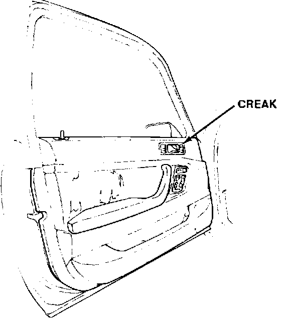
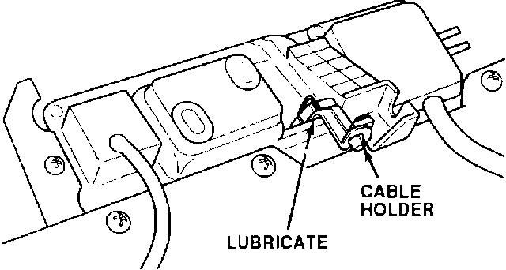

Interior Door Handle Creak
DOORSymptom:

Creak from the interior door handle.
Corrective Action:
Lubricate the contact surfaces.
1. Remove the door panel, refer to section 20 of the service manual.

2. Inspect the bottom of the release cable holder for signs of contact. If the cable holder is touching the door panel, apply silicone grease to the cable holder.
3. Reinstall the door panel.
WARRANTY INFORMATION:
Operation number: 819220
Flat rate time: 0.4 hours
Failed P/N: 72160-SP0-023ZA
Defect code: 042
Contention code: B07